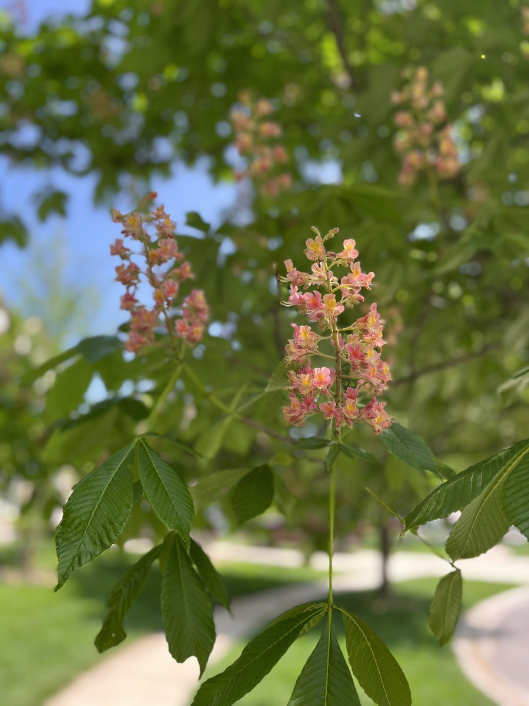
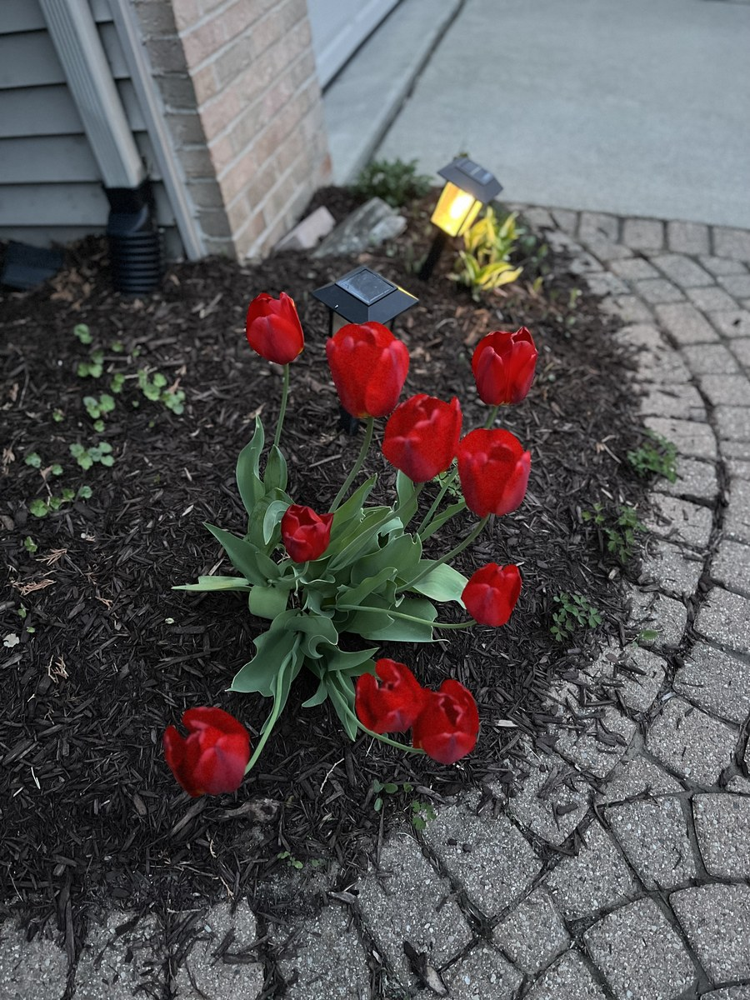
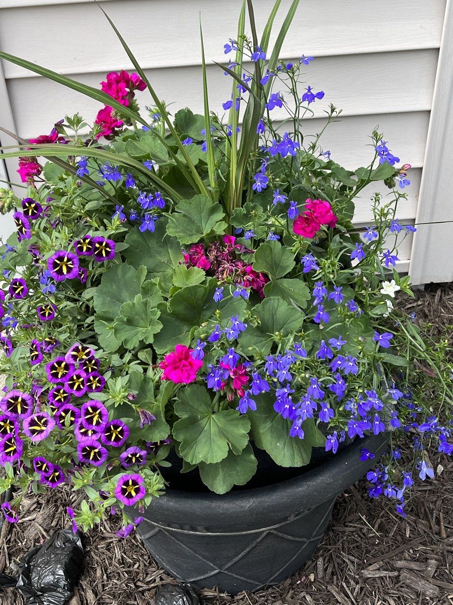
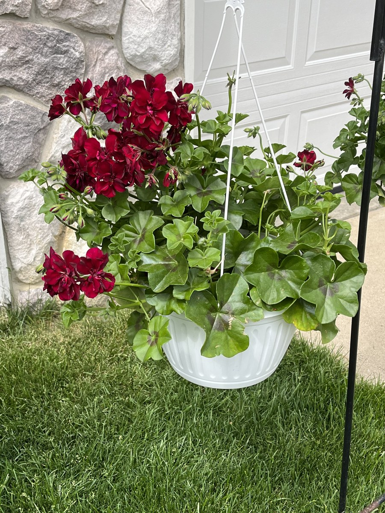
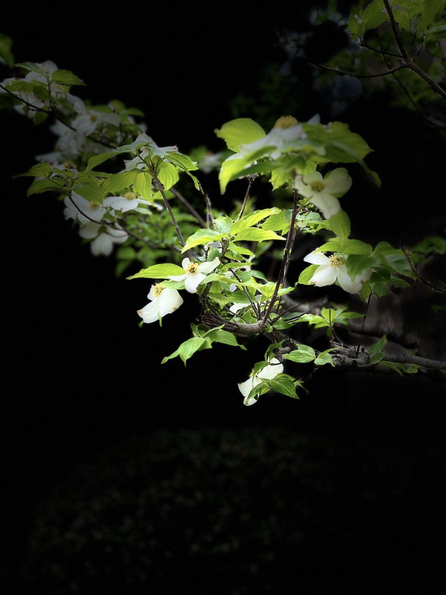
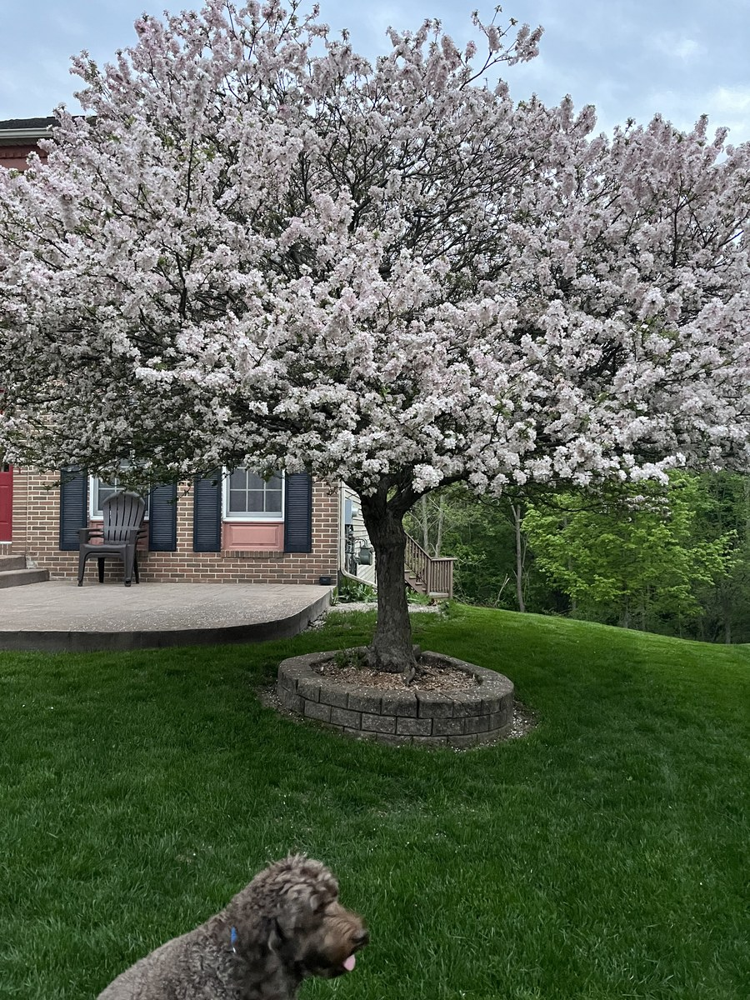
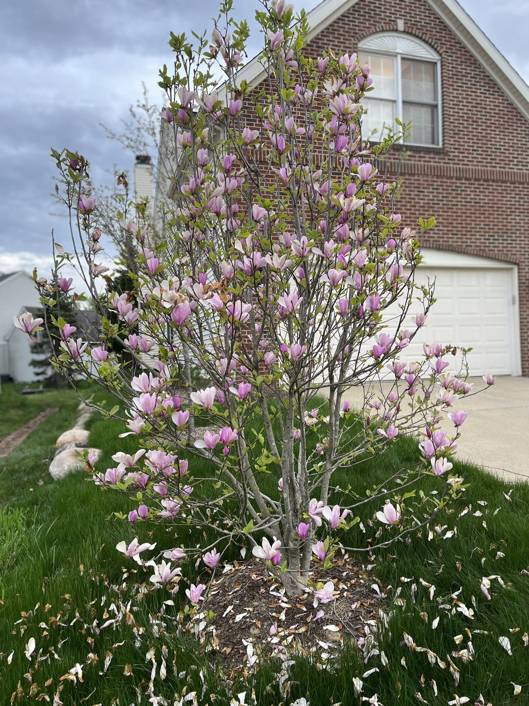
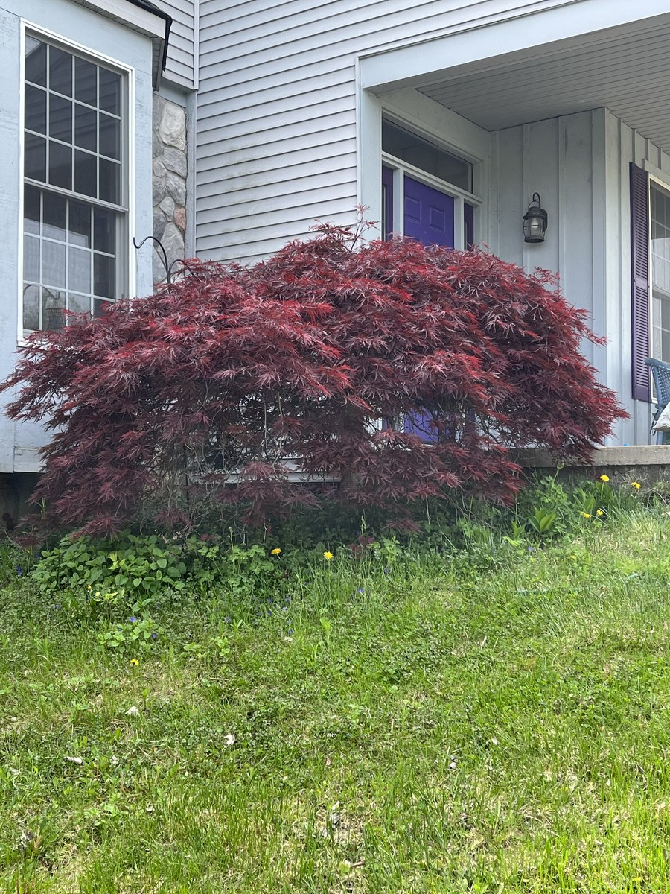
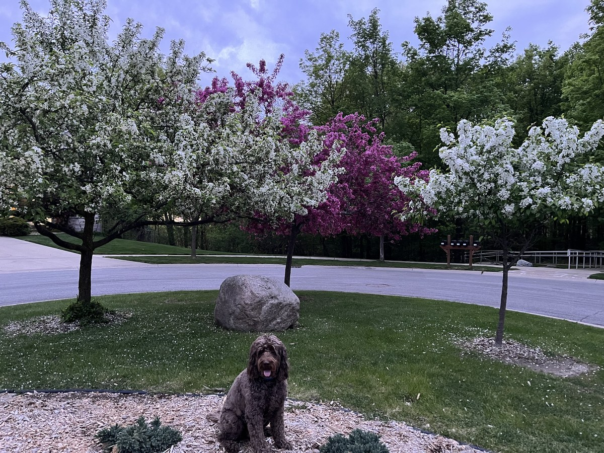

A walk among the flowers
Small details make a garden worth exploring: a cluster of pink blossoms, bright red tulips, and sunlight caught on a white flowering branch. These nine photographs bring together flowers, leaves, and quiet corners of green.
Take a slow look at the colours and textures in each photograph. From hanging baskets to flowering trees, every scene offers a different view of the same simple pleasure: spending a little time outdoors.








